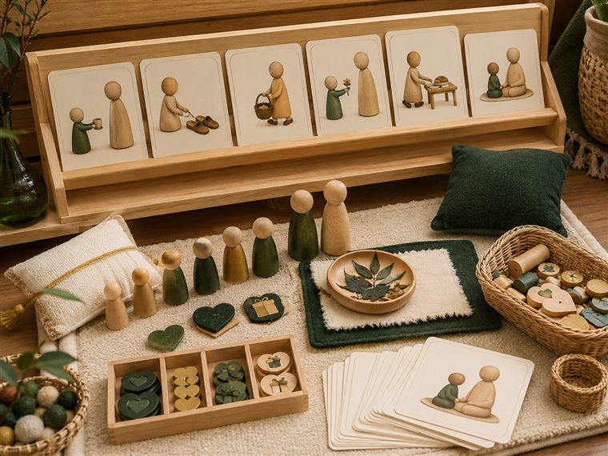
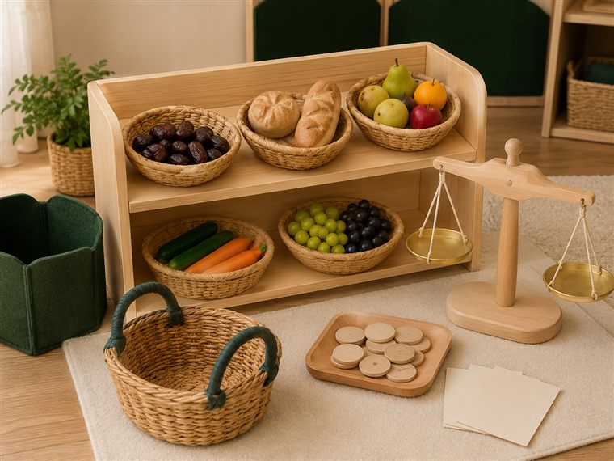
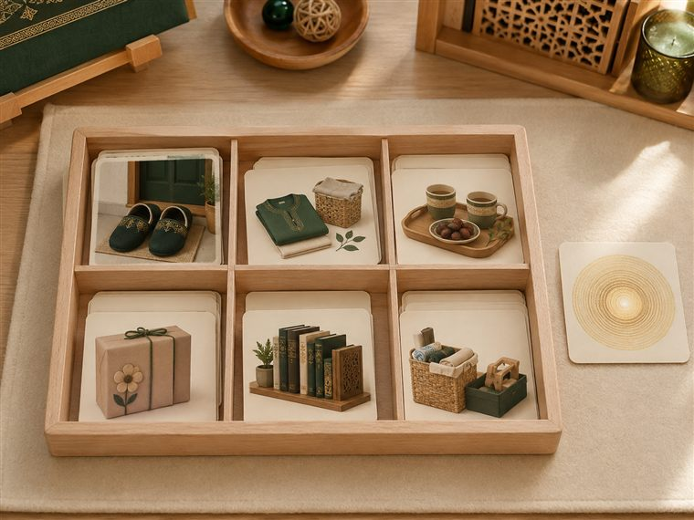

اليوم الثالث · أبرُّ والديَّ واللهُ البصيرُ يراني
مساحاتُ لعبٍ حرّ. لكثرة الأعداد نفتح ٤ أركانٍ متوازية بمراكز مختلفة؛ وزّعي المجموعات عليها وتتناوب بينها في الفترتين حتى لا تتكدّس. كل ركنٍ لمسةٌ تكاملية مع اللعب تجمع دروس اليوم: برّ الوالدين (علّمني) · اللهُ البصيرُ يراني (أحبك ربي) · الملائكةُ تكتبُ عملي (كتابي · الإنفطار) — تذكيرًا لا تجسيدًا لهيبة الغيب؛ و«البصير» قرصٌ مشعٌّ مجرّد لا عين. (بلا وجوه لذوات الأرواح. أعمار ٥–٦: تلوين جاهز/قصّ ولصق/ترتيب/بيع وشراء لعبيّ/قصص مصوّرة — بلا كتابةٍ أو رسمٍ حرّ.)

📚 المكتبة · «قصّةُ برّ الوالدين»
يتصفّح الطفل كتبًا وبطاقاتِ صورٍ عن برّ الوالدين (الطاعة · خفض الجناح · الدعاء لهما · الخدمة)، ويرتّب صورَ القصة ويحكيها لعبًا بلا كتابة.
🧰 الأدوات: كتبٌ مصوّرة (بلا وجوه) · بطاقاتُ صورِ مواقف البرّ · بطاقاتُ تسلسلِ قصةٍ للترتيب · وسائدُ ركن القراءة.
📋 دور المعلمة: تقرأ القصةَ بالصورة وتسأل «كيف برَّ ولده؟»؛ تعين على ترتيب الأحداث؛ تُرغِّب في برّ الوالدين والدعاء لهما.
🌱 المعنى المركزي: برُّ الوالدين بابٌ من أبواب رضا الله؛ أُطيعُهما وأدعو لهما.
📜 قوانين الركن: أبقى في ركني حتى ينتهي الوقت · أحافظ على أدواته · أتشارك وأنتظر دوري · أُعيد الأدوات مرتّبة.

🛒 الدكان · «أتسوّقُ لأخدمَ والديّ»
يلعب الطفل البيعَ والشراء: يقضي حاجةَ أمِّه من الدكان (خبز · فاكهة · حليب) بسلّةٍ ونقودٍ لعبية وميزان، ويسلّمها لعبًا خدمةً لوالديه.
🧰 الأدوات: سلعٌ لعبية (علبٌ وفاكهة مجسّمة) · سِلالٌ · نقودٌ لعبية · ميزانٌ · طاولةُ دكان.
📋 دور المعلمة: تُدير أدوار البائع والمشتري لعبًا؛ تربط قضاء الحاجة بخدمة الوالدين وبرّهما؛ تشجّع الصدقَ في البيع.
🌱 المعنى المركزي: أخدمُ والديَّ وأقضي حاجتهما فذلك من البرّ.
📜 قوانين الركن: أبقى في ركني حتى ينتهي الوقت · أحافظ على أدواته · أتشارك وأنتظر دوري · أُعيد الأدوات مرتّبة.
🎨 فنوني · «هديّةٌ لوالديَّ · واللهُ البصيرُ يراني»
يلوّن الطفل بطاقةَ هديّةٍ لوالديه ويلصقها، ويلوّن قرصَ النور المشعّ المجرّد (رمز أنّ اللهَ البصيرَ يرى) — بلا عينٍ ولا وجه — ويردّد «أُحسنُ ولو خفية».
🧰 الأدوات: بطاقاتُ الهديّة الجاهزة للتلوين · قرصٌ مشعٌّ مجرّد للتلوين (لا عين) · أقلام تلوين · مقصٌّ ولاصق.
📋 دور المعلمة: تربط الهديّةَ بحبّ الوالدين؛ تشرح أنّ اللهَ البصيرَ يرانا في السرّ والعلن دون تصويرٍ للذات العليّة؛ تُرغِّب في الإحسان خُفية.
🌱 المعنى المركزي: اللهُ البصيرُ يراني؛ فأُحسنُ لوالديَّ ولو لم يرَني أحد.
📜 قوانين الركن: أبقى في ركني حتى ينتهي الوقت · أحافظ على أدواته · أتشارك وأنتظر دوري · أُعيد الأدوات مرتّبة.

🧩 أدرك · «مواقفُ البرّ — فرزٌ ومطابقة»
يفرز الطفل بطاقاتِ المواقف إلى «برٌّ بوالديّ» و«ما ينبغي تركه»، ويطابق الحاجةَ بخدمتها (عطشٌ ↔ ماء · تعبٌ ↔ مساعدة)؛ لعبًا بلا كتابة.
🧰 الأدوات: بطاقاتُ مواقفَ مصوّرة (بلا وجوه) · لوحةُ تصنيفٍ بخانتين · بطاقاتُ مطابقة (حاجة ↔ خدمة).
📋 دور المعلمة: تعرض الموقفَ وتسأل «أهذا برٌّ؟»؛ تعين على الفرز والمطابقة؛ تذكّر بأنّ الله يرى البرَّ ويكتبه (تذكيرًا لا تجسيدًا).
🌱 المعنى المركزي: أُميّزُ أعمالَ البرّ وأبادرُ إليها مع والديّ.
📜 قوانين الركن: أبقى في ركني حتى ينتهي الوقت · أحافظ على أدواته · أتشارك وأنتظر دوري · أُعيد الأدوات مرتّبة.